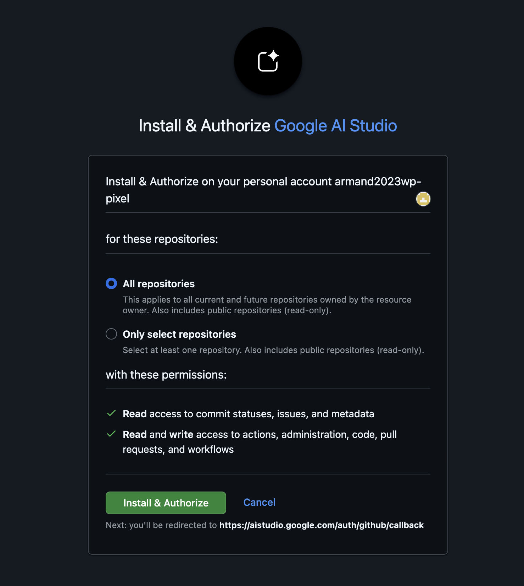

ONE DAY WORKSHOP
AI 零代碼建站 × AI Agent 自動化行銷
一天搞定品牌官網與 24 小時虛擬小編。
AI Studio × GitHub × Vercel × Supabase × Hermes Agent × Buffer

今天做出網站，也做出會自己發文的系統。
TODAY'S SCHEDULE
今天的時間表
- AM09:00 – 12:00用 AI 做出品牌官網，並且真的上線
- PM13:00 – 18:00建立 AI 內容生產線，排程發到社群
- END帶走的東西一個線上網址、一週排好的貼文
上午做網站，下午做自動化。
DO IT NOW
現在就做：五個帳號檢查
下午要用到的東西，現在就要準備好。
- Google 帳號（上午用 AI Studio）
- GitHub 帳號（存放你的網站）
- Facebook 粉絲專頁（個人動態發不了）
- Instagram 轉成專業帳號（個人帳號排不了程）
- Threads 設為公開，並確認已連結 Instagram
 GitHub
GitHub Vercel
Vercel Supabase
Supabase現在不檢查，下午一定卡住。
FOUR CONCEPTS
前台、後台、資料庫、伺服器
這四個詞聽起來很技術，其實就是一間餐廳。
- 前台 · 外場
客人看得到的：菜單、桌椅、動線。就是網站的畫面。
- 後台 · 廚房
客人看不到，店長登入這裡改菜單、看訂單。就是網站的後台介面。
- 資料庫 · 倉庫
食材放哪、還剩多少。就是名單、訂單、報名資料。
- 伺服器 · 店面
讓店二十四小時開著、客人隨時進得來的地方。
四個名詞，就是一間餐廳。
WHO DOES WHAT
今天這四個角色由誰扮演
- AI Studio前台：把畫面做出來
- Claude / Codex後台：接手改程式、串接、部署
- Supabase資料庫：存放表單與名單
- Vercel伺服器：讓網站一直開著


每個工具負責一個角色。
THE WHOLE ROUTE
今天的完整路線
一條線走完，網站就上線。
上午場 · 09:00 – 12:00
01
上午場：用 AI 做出第一版官網
不用寫程式，用說的就好。重點是把需求講清楚。
先把畫面做出來。
AI STUDIO
AI Studio：從一句話開始
Google 的 AI Studio 可以直接產出完整的網站畫面。
- 免費使用用 Google 帳號登入就好，不用信用卡
- 網頁操作今天全程走網頁介面，不申請任何金鑰
- 可以一直改不滿意就說哪裡要改，它會重做

用說的，就能做出網站。
講清楚需求，一次做出第一版
風格、需求、規格一次講清楚，比做完再補快很多。
我要做一個品牌官網。 我的品牌是： 品牌想給人的感覺是：（例：溫暖、專業、有質感） 1. 誰會使用這個網站：（例：想找手作課程的 25-40 歲上班族） 2. 他們來這裡要完成什麼：（例：看課程內容、確認時間地點、直接報名） 3. 需要哪些畫面與區塊：（例：首頁、課程介紹、講師介紹、報名表單、聯絡方式） 請根據以上做出這個網站的第一版。要求： 1. 使用繁體中文，文案要具體，不要用「這裡是標題」這種佔位文字 2. 手機、平板、桌機都要正常顯示 3. 每一頁都要有頁面標題與頁面描述（title 與 description） 4. 要有社群分享預覽的設定，分享到 Threads 或 Facebook 時會顯示標題、描述與圖片 5. 配色與字體要一致，符合我剛才說的品牌感覺 6. 每個區塊都要有明確的行動呼籲 做完之後，請告訴我你做了哪些頁面、每一頁的用途，以及還有哪些地方需要我補資料。
風格和需求一次給齊，AI 才做得準。
產出後先檢查三件事
- 頁面資訊
標題與描述 - 分享預覽
貼到社群長什麼樣 - 手機版
字有沒有被切掉
請你檢查這個網站，逐項回報結果（通過 / 沒通過 / 怎麼修）： 1. 頁面資訊：每一頁是否都有標題與描述？內容是否針對該頁而不是全站一樣？ 2. 分享預覽：分享到 Threads、Facebook 時會顯示什麼標題、描述、圖片？ 3. 手機版：在 375、768、1440 三個寬度下，有沒有文字被切掉、按鈕重疊、圖片變形？ 4. 可讀性：文字與背景的對比夠不夠？最小字級會不會太小？ 請直接列出有問題的地方並修正，修完再回報一次。
讓 AI 自己檢查，再自己修。
改版與微調
一次只改一個地方，才知道是哪裡變好或變壞。
請幫我調整以下地方，一次只改我列出的項目，不要動其他部分： 顏色：（例：主色改成更深的藍，按鈕改成橘色） 排版：（例：首頁標題再大一點，區塊之間的留白增加） 文案語氣：（例：現在太正式，改成像在跟朋友說話，但不要用網路流行語） 其他： 改完之後，請告訴我你改了哪幾個地方。
一次只改一個地方。
上午場 · STEP 02
02
上午場：把成果存起來
做好的東西要有地方放，而且要能回到之前的版本。
存起來，才不會弄丟。
SAVE THE FRONTEND
從 AI Studio 存到 GitHub
用 AI Studio 的匯出功能，把前端放進自己的 GitHub repository。
第一次連接 GitHub 時，會跳出授權畫面，確認後才能存進 repo。

把第一版存到 GitHub。
VERSION CONTROL
GitHub 在做的事：時光機
它幫你把每一次的修改都存成一個時間點。
- 改壞了可以回到昨天那一版，不用重做
- 換電腦在哪台電腦都能繼續做
- 給 AI 看Claude 和 Codex 從這裡讀你的專案
改壞了，隨時回到昨天。
上午場 · STEP 03
03
上午場：讓 AI 幫你部署與維護
畫面做好了，接下來換另一種 AI 上場：能真正動你檔案的那種。
接下來換 Claude 或 Codex 上場。
AI CODING
Claude Code 與 Codex 接手
AI Studio 做前台；這兩個負責後台、部署與後續維護。
- Claude Code讀專案、修改、測試、送出
- Codex新增功能、檢查、提交
- 共同點它們會直接動你電腦裡的檔案
它們能直接動你的專案檔案。
先接上 repo，再讓 AI 讀專案
先讓 Claude 或 Codex 連上你的 repo，再叫它改東西——不然它會改壞你看不懂的地方。
你在本地幫我開一個資料夾，叫做：（幫網站取個資料夾名稱，例如 my-brand-site） 並用 git clone 連接這個 repo：（貼上你剛剛在 AI Studio 存的那個 GitHub repo 網址） 複製過去之後跟我說一聲，並告訴我這個資料夾實際在電腦的哪個路徑。
這是我用 AI Studio 產生的網站專案。請你先做以下三件事，先不要修改任何檔案： 1. 讀過整個專案，告訴我這個網站有哪些頁面、用了什麼技術、資料現在放在哪裡 2. 指出有沒有明顯的問題（壞掉的連結、缺少的檔案、寫死的測試資料） 3. 告訴我如果要部署到 Vercel、並且接上 Supabase 資料庫，需要動哪些地方 看完再回報，我確認後才開始改。
先接上 repo，再讓 AI 看懂專案。
部署到 Vercel
給 AI 一個部署用的 token，剩下的交給它全自動做完，順便設好自動檢查。
我要把這個專案部署到 Vercel，並設定基本的自動檢查，全部用工具自動做。 我已經在 Vercel 建立一個 Access Token，這是：（貼上你的 Vercel token） 請照以下順序做： 1. 用這個 token 透過 Vercel CLI，把這個專案連接到 Vercel（這是一次性的初始設定） 2. 告訴我這個專案需要哪些環境變數，並用 token 幫我設定好 3. 確認這個專案已經接上 GitHub 整合——之後只要 push 到 GitHub，Vercel 就會自動部署，不需要每次都用 CLI 4. 幫我在 GitHub Actions 加一個自動檢查：每次 push，先確認網站建置（build）有沒有成功，讓我在 GitHub 上就能看到綠勾或紅叉 5. commit 並 push 一次，確認自動部署真的會動 6. 部署完成後，給我一份檢查清單，讓我逐項確認線上網站是好的 7. 最後告訴我：這個 token 有什麼權限、等一下要去哪裡撤銷或重新產生 完成後提醒我，這個 token 只在今天用，等一下要記得處理掉。
給一個 token，剩下的交給 AI 全自動做完。
SERVER
Vercel 做的事：幫你開店
回到早上的餐廳比喻，Vercel 就是那個店面。
- 一直開著你電腦關機，網站還在
- 給你地址一個誰都能打開的網址
- 免費起步個人專案的用量通常不用付錢
伺服器就是讓網站一直開著的地方。
接上 Supabase 資料庫
網站要記得住東西，就需要資料庫——這次也交給 AI 全自動設定。
請幫我把這個網站接上 Supabase 資料庫，全部用工具自動做，不用我手動貼 SQL。 我已經在 Supabase 建立一個 Access Token，這是：（貼上你的 Supabase token） 我要儲存的資料是：（例：報名表單的姓名、Email、電話、想上的課程、報名時間） 請照以下順序做： 1. 先設計資料表結構，把欄位、型別、哪些必填列給我看，我確認後再繼續 2. 用這個 token 直接建立資料表，不用我自己貼 SQL 到後台 3. 把連線需要的金鑰自動設定到 Vercel 的環境變數 4. 修改網站，讓表單送出後資料會存進 Supabase 5. 幫我測試一次，確認資料真的存進去，並告訴我怎麼在 Supabase 後台看到收到的資料 完成後提醒我，這個 token 可以動到我帳號下所有 Supabase 專案，等一下要記得去後台撤銷或重新產生。
給一個 token，資料庫也自動接好。
DATABASE
Supabase 做的事：你的倉庫
表單、名單、訂單，全部放在這裡，而且你隨時看得到。
- 報名表單誰報名、報了什麼、什麼時候
- 電子報名單之後要寄信、發通知都靠它
- 金流串接訂單狀態也是存在資料庫裡
表單、名單、訂單，都放在這裡。
推送即部署
設定好之後，只要送出修改，線上網站會自己更新。
自動部署設定成功後，記得把 GitHub repository 設為 Private。
改好送出去，線上網站就自己更新。
接上你自己的網域
Vercel 給的網址是 xxx.vercel.app，想換成自己的網域，交給 AI 帶你設定。
我想幫這個網站接上自己的網域：（你的網域，例如 mybrand.com） 我的網域是在（你的網域註冊商，例如 GoDaddy、Namecheap、Cloudflare）買的。 請照以下順序做： 1. 用剛才的 Vercel token，幫我把這個網域加進專案設定 2. 加完之後，Vercel 會給幾筆 DNS 設定值，請列出來並告訴我每一筆是做什麼用的 3. 告訴我要去我的網域註冊商後台的哪裡，把這些值貼上去 4. 告訴我大概要等多久才會生效，以及怎麼確認真的生效了、網址前面的鎖頭（https）有沒有跑出來 我還沒有網域的話，也請先幫我列出一般網域註冊商大概的價格範圍。
網域接好，網址就不再是 xxx.vercel.app。
BEFORE LUNCH
上午收尾：三件事要處理
網站上線了，先把安全的事處理完再去吃飯。
- 01回去撤銷今天用的 token
今天貼給 AI 看過的 Vercel、Supabase token，到後台重新產生一組新的，讓今天這組失效。
- 02把 repository 設為 Private
確認之後重新部署一次，打開網址測試網站仍然正常。
部署用的 token 今天可以給 AI，但用完要撤銷；客戶的信用卡號、銀行密碼、任何跟金錢直接掛鉤的密碼，永遠不要交給 AI。
部署 token 用完就收回，金錢相關的密碼永遠自己輸入。
午休 · 12:00 – 13:00
PM
午休：下午讓網站自己說話
上午做出網站。下午做的是：讓內容持續產出、持續發出去。
下午換內容上場。
TWO HALVES
下午的路線：兩件事分開看
很多人把「自動化行銷」當成一件事，其實是兩件。
- 內容生產線
想主題、寫文案、配圖、改成各平台版本。這一段 AI 很強。
今天用 Hermes Agent 示範 - 發布端
真的把貼文送到 Threads、Instagram、Facebook 上，並且排定時間。
今天用 Buffer 實作
產內容是一件事，發出去是另一件事。
先說清楚：什麼免費，什麼要錢
今天教的全部可以免費做完。但有些事免費做不到，先講清楚。
- 免費做得到
AI 產文案與配圖、排程貼文、三個社群帳號、內容規劃與品牌語氣設定。
今天全程不需要信用卡 - 要錢才有的
真正「你電腦關機也繼續跑」的自動化。AI Agent 的排程需要一台一直開著的機器。
雲端主機約每月 5 美元起 - 更多社群帳號
免費排程工具通常給三個帳號。要接更多要升級。
約每個帳號每月 5 美元
免費做得到很多，但不是全部。
Meta 的三個硬限制
這三件事跟你用什麼工具無關，是 Meta 自己的規定。
- Instagram 個人帳號不能用工具排程，一定要轉成專業帳號
- Facebook 個人動態不能用工具發文，只能發粉絲專頁
- Instagram 每天最多 25 篇，而且每篇一定要有圖片或影片
現在還沒轉專業帳號、還沒有粉專的人，趁這一頁處理完。
這三件事，換什麼工具都一樣。
AI Agent 跟 ChatGPT 差在哪
- 聊天機器人
你問一句，它答一句。關掉視窗就忘了，下次要重講一次。
- AI Agent
會記得你的品牌、會照時間自己做事、會用工具查資料和產圖。
- 對行銷的差別
不用每次重新解釋品牌調性，產出的語氣才會一致。
它會記得、會排程、會自己動手。
下午場 · 講師示範
07
下午場：Hermes Agent 示範
這一段先看我操作。安裝步驟在後面，回家照著做就好。
這一段看我操作就好。
Hermes Agent 是什麼
Nous Research 開源的 AI 助理，會記得事情、會自己排程做事。
- 開源免費MIT 授權，軟體本身不用錢
- 有桌面版Hermes Desktop，Mac 與 Windows 都有，不用打指令
- 官方網址hermes-agent.nousresearch.com
網路上有幾個名字很像的網站不是官方的，下載請只認上面這個網址。
開源、免費、有桌面版。
示範一：讓 AI 記住你的品牌
每次都要重新解釋「我們品牌是什麼調性」，是最浪費時間的事。
- 01把品牌語氣寫成一份設定，讓它一直記得
- 02餵它看你過去寫得最好的幾則貼文
- 03之後每次產出，語氣都會一致
記得住品牌調性，才不用每次重講。
建立品牌人設
這則 prompt 貼到任何 AI 都能用，不是只有 Hermes。
請幫我建立品牌人設，之後所有社群貼文都要照這個寫。 品牌名稱： 我們在做什麼： 目標受眾：（越具體越好，例：30-45 歲、有小孩、住在都會區、會自己查資料的媽媽） 語氣：（例：像有經驗的朋友在分享，不說教、不誇大） 一定要有的：（例：每篇都要有一個可以馬上做的小行動） 絕對不要出現的：（例：不要用「絕對」「保證」「第一名」；不要療效宣稱；不要驚嘆號連發） 我們過去寫得最好的三則貼文是： 1. 2. 3. 請你讀完後，用自己的話總結「這個品牌說話的樣子」，並寫成一份可以重複使用的品牌語氣指南。
一次設定，之後每篇都照這個寫。
示範二：把你的寫法變成技能
你平常怎麼寫貼文，用說的講一次，它就記起來變成可重複的流程。
- 01用自然語言描述你的步驟，不用寫程式
- 02它會整理成一個可以重複呼叫的技能
- 03下次只要叫技能的名字，整套流程就跑一次
實際例子：先查這週同業在討論什麼、挑三個角度、每個角度寫成三平台版本、附上配圖描述。
用說的就能教會它，不用寫程式。
示範三：用一句話設定排程
不用學排程語法，直接跟它說時間就好。
- 每天早上九點幫我找今天適合發文的三個主題
- 每週一整理上週貼文成效，給我下週建議
- 每天下午五點把明天要發的內容準備好給我審
重要前提：排程要跑，程式要一直開著。筆電闔上就會停。
跟它說時間，它就會準時做。
示範四：用手機遠端指揮
接上 Telegram 或 Discord，人在外面也能叫它做事。
- 01在手機上傳一句「幫我寫今天的貼文」
- 02它在你電腦上執行，把結果傳回手機
- 03你在通勤路上就能審完內容
人在外面，也能叫它做事。
BEFORE YOU INSTALL
用 Agent 之前，先知道五件事
它能幫你做很多事，是因為它有很大的權限。這兩件事是同一件事。
- 不要關掉確認機制，關掉等於讓它直接改檔案、執行指令
- 不要在存有客戶資料的電腦上跑，它讀得到你的檔案與瀏覽器資料
- 不要隨便安裝別人做的技能，那等於執行來路不明的程式
- 它讀到的網頁和文件可能藏有指令，做社群蒐集資料時特別要注意
- 它是按使用量計費，你原本的 ChatGPT 或 Claude 月費在這裡不能用
方便和風險是同一件事。
回家自己裝：安裝步驟
現場不裝。回家網路穩定、沒人趕時間的時候再裝。
- 01打開 hermes-agent.nousresearch.com，只認這個網址
- 02下載桌面版 Hermes Desktop，選你的作業系統
- 03第一次開啟會有引導畫面，跟著點完
- 04用 Nous Portal 帳號登入，免費方案不用信用卡
- 05先叫它做一件小事，確認會動再繼續
Mac 需要 macOS 12 以上，Windows 需要 10 或 11。裝的時候會下載不少東西，用穩定的網路。
照著這五步，回家就能裝好。
下午場 · 全班實作
08
下午場：換你動手排程發文
接下來每個人打開自己的筆電，我們一起做完一週的內容排程。
這一段大家一起做。
Buffer：註冊與連接帳號
免費方案就能排 Threads，而且不用信用卡。
- 01用 Email 註冊，不需要付款資料
- 02連接三個帳號：Threads、Instagram、Facebook 粉專
- 03授權畫面出現的權限請全部同意，跳過會有功能壞掉
- 免費帳號一輩子只能連接八個不同帳號，接了又斷也算，不要亂試
- Threads 必須設為公開，而且必須已經連結 Instagram
三個免費名額，想清楚再接。
一次產出一週內容
不要每天早上才想今天要發什麼。一次規劃七天。
請依照我的品牌人設，幫我規劃下一週七天的社群內容，每天一個主題。 這週想推的重點是： 可以搭配的時事或節日： 每一天請給我： - 主題（一句話） - Threads 版本：150 字以內，第一句就要讓人想看下去，不要用「大家好」開頭 - Instagram 版本：有畫面感，開頭三行要能在未展開時就抓住人，結尾放 5 個相關標籤 - Facebook 版本：完整敘事，可以稍長，適合分享 - 建議配圖：用一句話描述畫面內容，我會拿去生圖 - 建議發文時間 請用表格整理，方便我直接複製使用。
一次規劃七天，不用天天想。
一則內容，三個平台版本
同樣一件事，三個平台的說法要不一樣，否則哪邊都不討好。
以下這則內容，請幫我改寫成三個平台的版本，核心訊息不變，但語氣與長度要符合各平台： 原始內容： 請給我： 1. Threads：150 字內，口語、有觀點、第一句就要讓人停下來，不要放標籤 2. Instagram：有畫面感，前三行是重點，因為未展開時只看得到這些，結尾 5 個標籤 3. Facebook：完整敘事，可以有前因後果，適合被分享與留言討論 三個版本都不要出現我的品牌禁用詞。改完後，告訴我哪個版本最有機會被互動，為什麼。
同一個訊息，三種說法。
配圖從哪裡來
Instagram 每篇一定要有圖，所以配圖是必須的。
- Gemini 網頁版免費就能生圖，把剛才的配圖描述貼進去
- 下載後直接用存到電腦，等一下上傳到排程工具
- 一次做完一週七張圖一起產，比每天現做快
注意：走程式介面的免費額度只能產文字，不能生圖。生圖請用網頁版。
用網頁版生圖，免費而且夠用。
把內容排進 Buffer
現在把剛才產出的一週內容，實際排進去。
免費方案每個帳號可以排十則。三個帳號各排七天，剛好夠用。
排好之後，它會自己發。
內容日曆與發文節奏
自動化解決的是「有沒有發」，不會自動解決「發得好不好」。
- 固定節奏
寧可一週三則穩定，不要一週十則然後停兩個月 - 每週回看
哪一則互動最好，下週多做同類型 - 保留人味
AI 產草稿，你來加真實的細節與觀點
穩定比爆紅重要。
KNOWN TRAPS
踩雷清單
- Buffer 免費帳號一輩子只能連八個帳號，接了又斷也計入
- Threads 沒設公開、沒連結 Instagram，就是連不上排程工具
- Instagram 還在個人帳號模式，任何工具都排不了
- Facebook 沒有粉絲專頁，就只能手動發
- AI Agent 的排程要程式一直開著，筆電闔上就停
這些坑，先知道就不會踩。
WHAT'S NEXT
想再往前一步，要付什麼
- 先不用付
今天教的整套流程，免費方案完整跑得完，先做三個月再說。
- 要更多社群帳號
超過三個帳號、或要排更多則時，再升級排程工具。
約每個帳號每月 5 美元 - 要真正的不打烊
租一台一直開著的雲端主機，讓 AI Agent 的排程不會因為你關電腦而停。
每月約 5 美元起
免費夠用，要更多再加錢。
TAKE IT HOME
今天你帶走了什麼
- 01一個線上網址
- 02一個資料庫
- 03一組品牌語氣
- 04一週排好的貼文
- 05十則可重複使用的 prompt
回家第一件事：把這份簡報加入書籤，明天照著發第一則。
網站會上線，內容會持續。